Presse
Pressemitteilung · München, 26.09.2026
Mit 29 die Beratung verlassen, mit 30 das erste Buch: Münchner Autorin veröffentlicht ein Buch mit QR-Codes, die ins Unheimliche führen
Psychologin, Unternehmensberaterin, dann der Bruch: In „How Life Feels…“ erzählt Anna Greyhem vom Gefühl, mit Ende 20 nur noch zu funktionieren. Sechs QR-Codes führen ihre Leserinnen und Leser zu interaktiven Erlebnissen auf dem Smartphone.
Anna Greyhem ist Psychologin und arbeitete zuletzt als Unternehmensberaterin. Mit 29 merkt sie, dass von ihr selbst kaum etwas übrig ist. Sie kündigt. Übrig bleibt eine Sammlung von Notizen auf ihrem Handy: Gedanken, Träume, kleine Szenen aus dem Alltag. Daraus ist ihr erstes Buch entstanden, das sie mit 30 im Selbstverlag veröffentlicht hat.
„How Life Feels…“ ist kein Roman, sondern eine Reise in Fragmenten: kurze Prosa, Gedichte und Erzählungen über Selbstzweifel, Liebe, Kindheit, Verlust und die Frage, wer man eigentlich ist, wenn man aufhört, jemand werden zu wollen. Der Ton wechselt dabei zwischen zärtlich, komisch und unheimlich, von einem augenzwinkernden Tagebuch aus dem Beraterjob bis zu düsteren Kurzgeschichten.
Besonders ist die digitale Ebene: Sechs QR-Codes im Buch führen zu interaktiven Erlebnissen auf dem Smartphone. Leserinnen und Leser schalten in einem dunklen Zimmer das Licht an, verschieben ein Gedicht zwischen zwei Perspektiven oder installieren eine neue Version der Erzählerin. An einer Stelle entscheiden sie sogar, wie es weitergeht.
„Ich habe mein ganzes Leben damit verbracht, jemand zu werden, und mich nie gefragt, wer ich schon bin“, sagt Anna Greyhem. „Dieses Buch ist der Versuch, mich zum ersten Mal anzusehen, ohne gleich zu bewerten, was ich sehe.“
Das Buch ist auf Englisch erschienen. Mit dem Schreiben auf Englisch begonnen hat Anna Greyhem während eines Auslandssemesters in Sydney, seitdem greift sie immer wieder zu dieser Sprache. „In einer anderen Sprache kann ich Dinge mit mehr Abstand betrachten“, sagt sie. „Manches hätte ich auf Deutsch nicht schreiben können.“
Buchdaten: Anna Greyhem: How Life Feels… A moan of life through a dead body. Selbstverlag, 2026. 165 Seiten, Englisch, mit Illustrationen von Philipp Gieler. ISBN 979-8-18599-217-3. 16,99 €. Erhältlich bei Amazon.
Ein QR-Erlebnis zum Ausprobieren
Eines von sechs digitalen Erlebnissen im Buch.
Das Gedicht „Tuesday's Nightmare“ erzählt von einem Traum, aus dem man nicht richtig aufwacht. Es endet so:
I wake up again.
It's dark.Should I try the light switch?
Im Buch folgt darauf ein QR-Code. Hier können Sie ihn selbst scannen:
Kurzbiografie
Anna Greyhem ist Psychologin, ehemalige Unternehmensberaterin und Autorin aus München.
Anna Greyhem ist Psychologin und arbeitete zuletzt als Unternehmensberaterin. Nach ihrer Kündigung mit 29 fand sie zum Schreiben zurück. Sie lebt in München. „How Life Feels…“ ist ihr erstes Buch.
Anna Greyhem hat geschrieben, seit sie schreiben kann: Geschichten über Meerschweinchen, Riesenspinnen in der Turnhalle, ein kleines Buch für ihre jüngere Schwester. Danach kam das Erwachsenwerden. Nach ihrem Master in Psychologie arbeitete sie zunächst in einem Softwareunternehmen, dann in der Unternehmensberatung, bis sie mit 29 merkte, dass sie dabei sich selbst verloren hatte. Sie kündigte und fand in den Notizen auf ihrem Handy wieder, was sie lange vergessen hatte: ihre Lust am Schreiben. Daraus entstand „How Life Feels…“, ein Buch aus Gedichten und kurzer Prosa, das mit QR-Codes über die Buchseiten hinaus aufs Smartphone reicht. Anna Greyhem lebt in München.
Buchdaten
- Titel
- How Life Feels… A moan of life through a dead body
- Autorin
- Anna Greyhem
- Verlag
- Selbstverlag (bei Amazon: Independently published)
- Erscheinungstermin
- 26.09.2026
- Sprache
- Englisch
- Umfang
- 165 Seiten
- Illustrationen
- Philipp Gieler
- ISBN
- 979-8-18599-217-3
- Preis
- 16,99 €
- Formate
- Taschenbuch und E-Book
- Erhältlich
- Amazon
- Besonderheit
- 6 QR-Codes zu interaktiven Erlebnissen auf dem Smartphone
- Hinweis
- Das Buch behandelt auch dunkle Themen wie Depression und Tod; ein Inhaltshinweis steht am Anfang des Buches.
Pressefotos
Alle Bilder dürfen honorarfrei zur redaktionellen Berichterstattung über Anna Greyhem und ihr Buch „How Life Feels…“ verwendet werden. Bitte nennen Sie dabei den jeweiligen Bildnachweis:
– Fotos Autorin und QR-Erlebnis: Nicolas Schimanski
– Buchfotos: Anna Greyhem
– Cover: Gestaltung Anna Greyhem, Illustration Philipp Gieler
Eine Bearbeitung über übliche Zuschnitte hinaus ist nicht gestattet.
Autorin

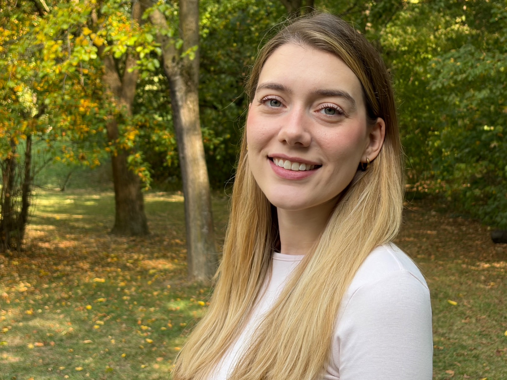

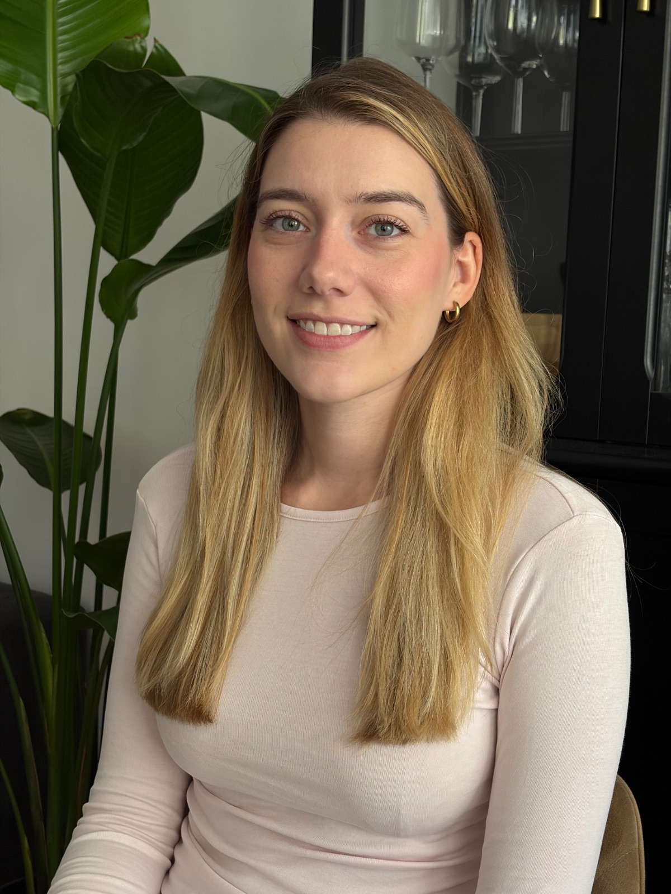

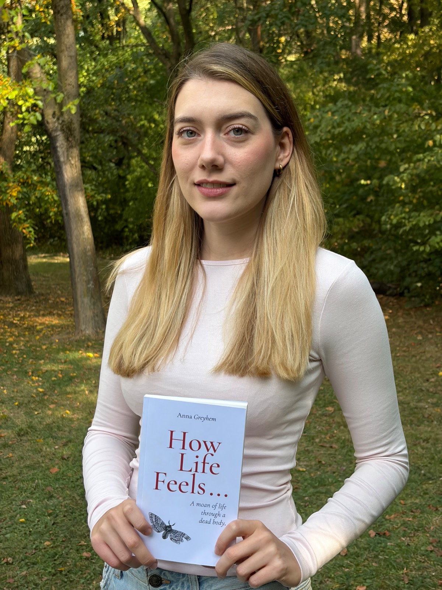

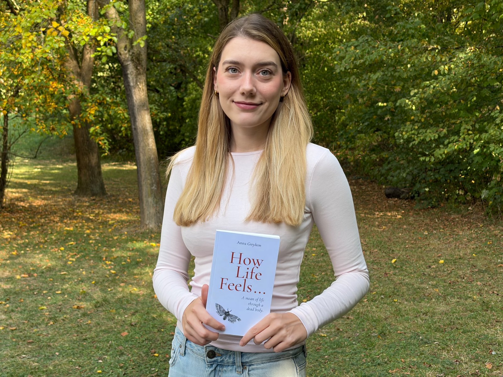

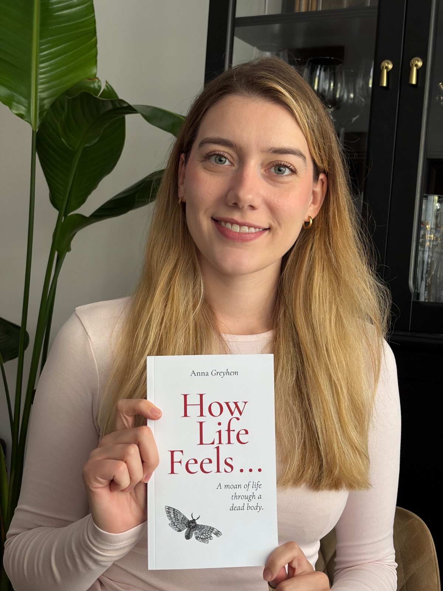

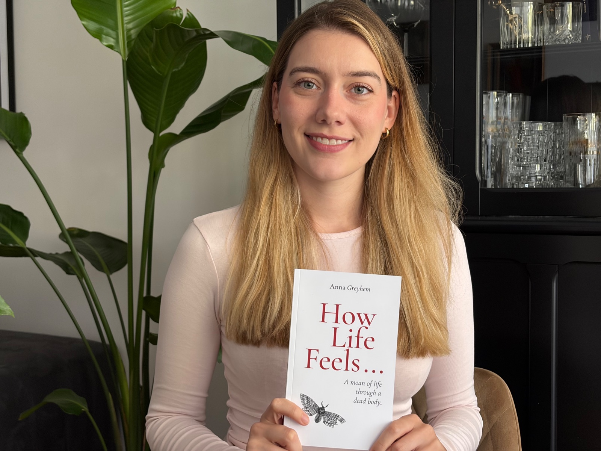

Buch
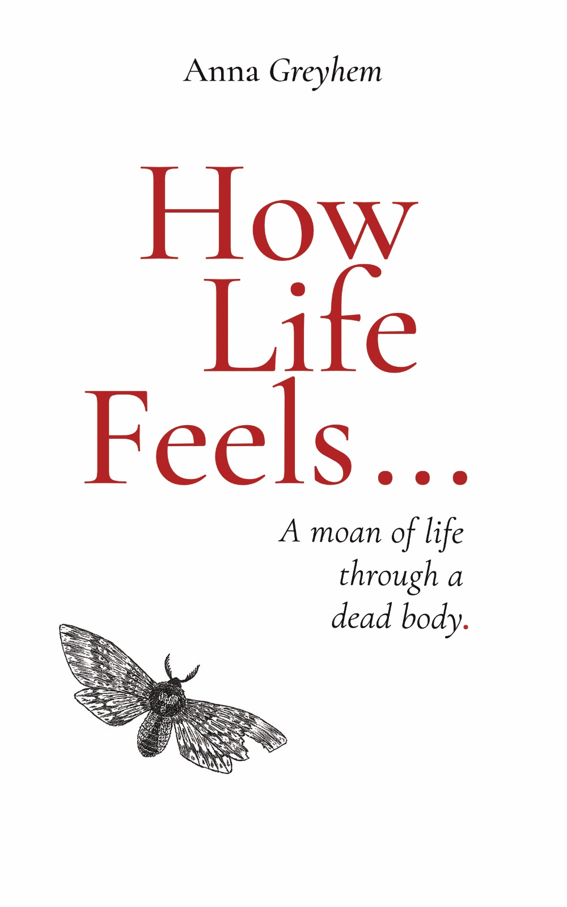

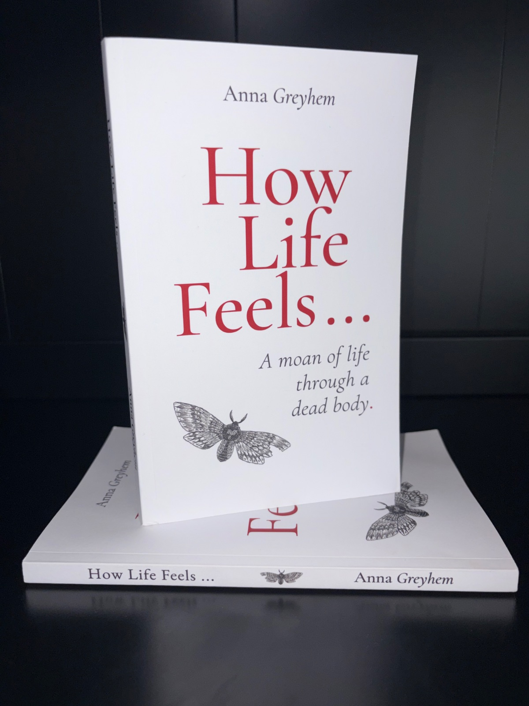

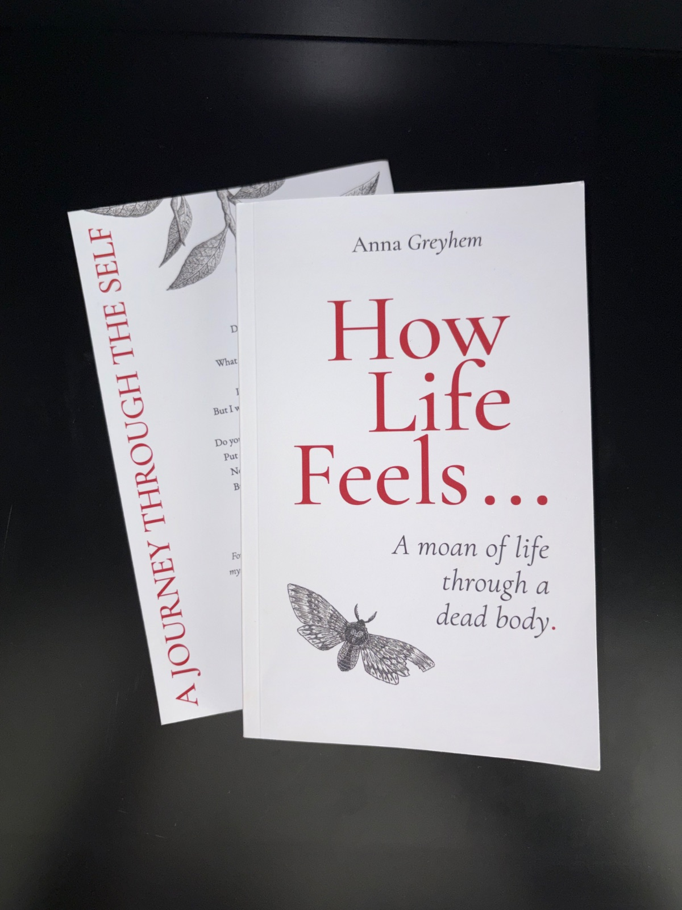

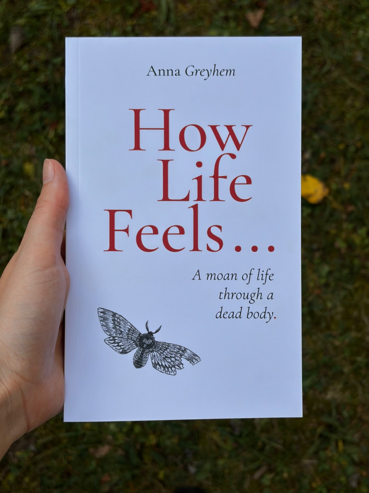

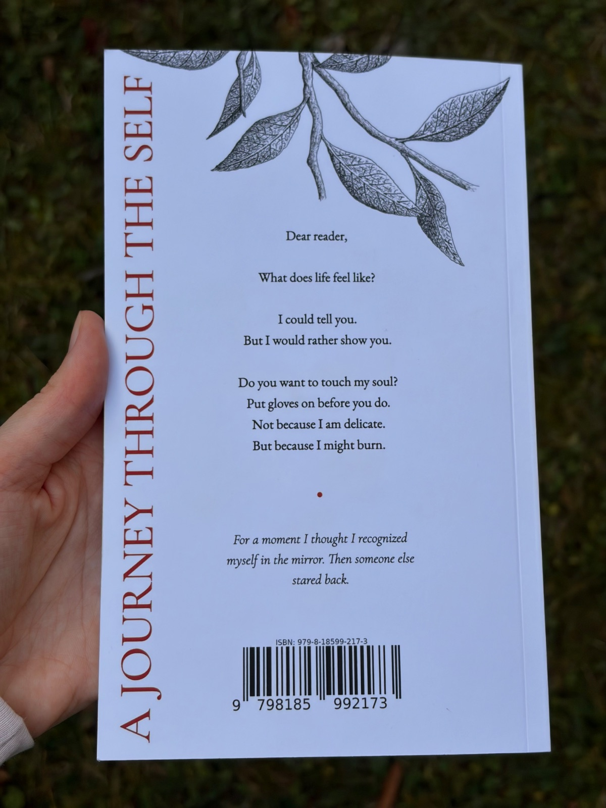

QR-Erlebnis
Per QR-Code werden Texte aus dem Buch zu digitalen Erlebnissen.
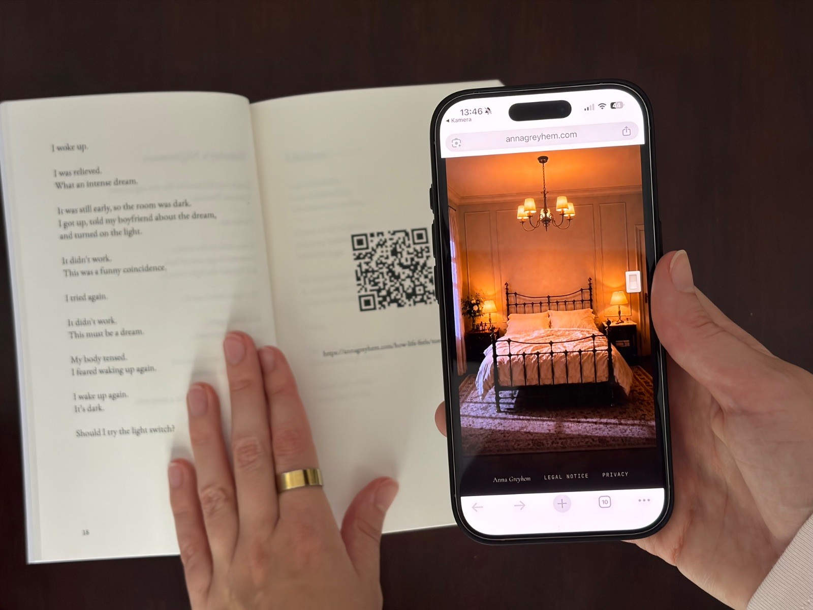

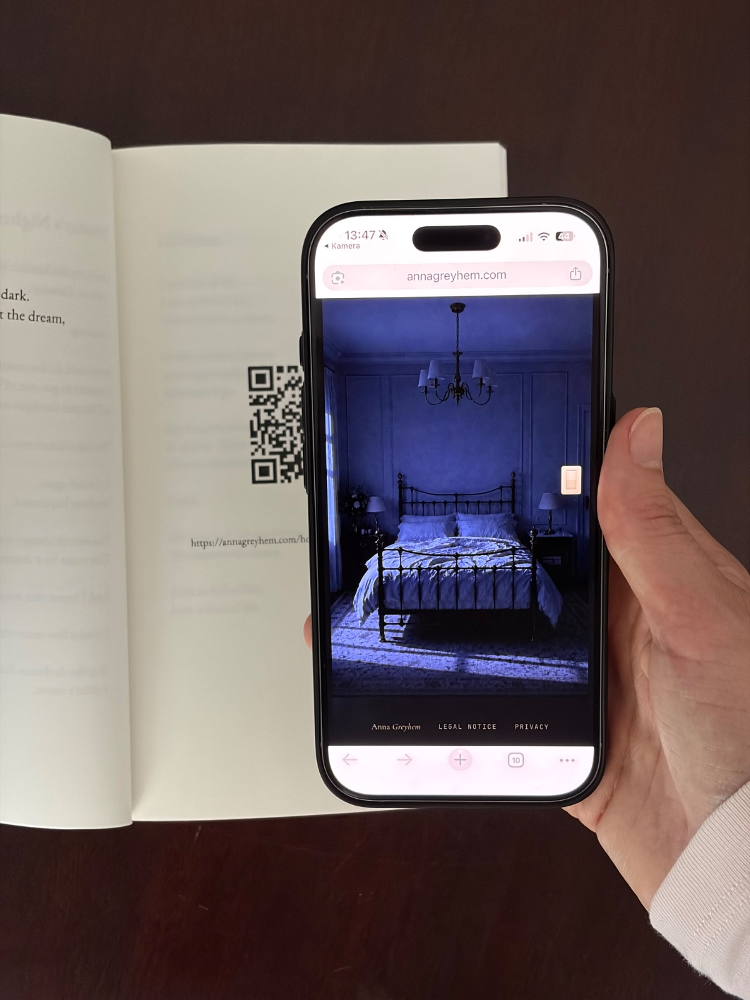

Schlafzimmerbild dieses digitalen Erlebnisses: gestaltet von Anna Greyhem mit KI-Bildwerkzeugen.
Weitere Motive schicke ich Ihnen gern auf Anfrage: [bitte JavaScript aktivieren]
Pressekontakt
Ich freue mich über Ihre Anfrage, ob Rezensionsexemplar, Interview oder weitere Fotos. Interviews gebe ich gern auf Deutsch oder Englisch.